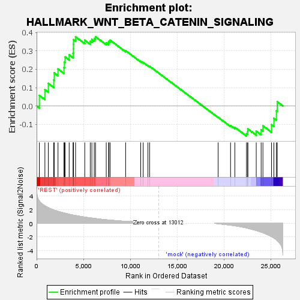
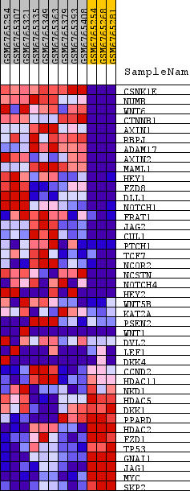
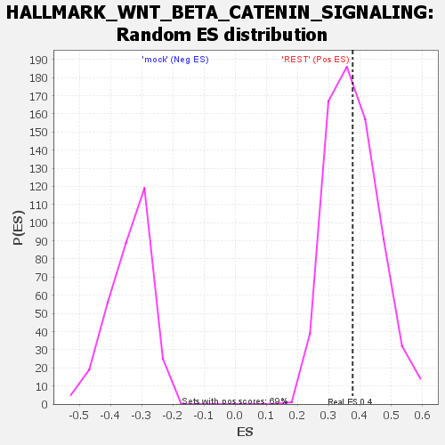

| Dataset | kera_ex_collapsed_to_symbols.kera_pheno.cls #REST_versus_mock.kera_pheno.cls #REST_versus_mock_repos |
| Phenotype | kera_pheno.cls#REST_versus_mock_repos |
| Upregulated in class | REST |
| GeneSet | HALLMARK_WNT_BETA_CATENIN_SIGNALING |
| Enrichment Score (ES) | 0.37655887 |
| Normalized Enrichment Score (NES) | 0.9945712 |
| Nominal p-value | 0.45705968 |
| FDR q-value | 0.7534424 |
| FWER p-Value | 1.0 |

| SYMBOL | TITLE | RANK IN GENE LIST | RANK METRIC SCORE | RUNNING ES | CORE ENRICHMENT | |
|---|---|---|---|---|---|---|
| 1 | CSNK1E | casein kinase 1 epsilon [Source:HGNC Symbol;Acc:HGNC:2453] | 294 | 3.260 | 0.0573 | Yes |
| 2 | NUMB | NUMB endocytic adaptor protein [Source:HGNC Symbol;Acc:HGNC:8060] | 884 | 2.564 | 0.0888 | Yes |
| 3 | WNT6 | Wnt family member 6 [Source:HGNC Symbol;Acc:HGNC:12785] | 1248 | 2.276 | 0.1228 | Yes |
| 4 | CTNNB1 | catenin beta 1 [Source:HGNC Symbol;Acc:HGNC:2514] | 1829 | 1.948 | 0.1416 | Yes |
| 5 | AXIN1 | axin 1 [Source:HGNC Symbol;Acc:HGNC:903] | 1876 | 1.920 | 0.1802 | Yes |
| 6 | RBPJ | recombination signal binding protein for immunoglobulin kappa J region [Source:HGNC Symbol;Acc:HGNC:5724] | 2282 | 1.739 | 0.2014 | Yes |
| 7 | ADAM17 | ADAM metallopeptidase domain 17 [Source:HGNC Symbol;Acc:HGNC:195] | 2918 | 1.509 | 0.2089 | Yes |
| 8 | AXIN2 | axin 2 [Source:HGNC Symbol;Acc:HGNC:904] | 2962 | 1.495 | 0.2387 | Yes |
| 9 | MAML1 | mastermind like transcriptional coactivator 1 [Source:HGNC Symbol;Acc:HGNC:13632] | 3034 | 1.472 | 0.2669 | Yes |
| 10 | HEY1 | hes related family bHLH transcription factor with YRPW motif 1 [Source:HGNC Symbol;Acc:HGNC:4880] | 3472 | 1.322 | 0.2780 | Yes |
| 11 | FZD8 | frizzled class receptor 8 [Source:HGNC Symbol;Acc:HGNC:4046] | 3896 | 1.197 | 0.2871 | Yes |
| 12 | DLL1 | delta like canonical Notch ligand 1 [Source:HGNC Symbol;Acc:HGNC:2908] | 3920 | 1.192 | 0.3113 | Yes |
| 13 | NOTCH1 | notch receptor 1 [Source:HGNC Symbol;Acc:HGNC:7881] | 3922 | 1.190 | 0.3362 | Yes |
| 14 | FRAT1 | FRAT regulator of WNT signaling pathway 1 [Source:HGNC Symbol;Acc:HGNC:3944] | 3932 | 1.188 | 0.3609 | Yes |
| 15 | JAG2 | jagged canonical Notch ligand 2 [Source:HGNC Symbol;Acc:HGNC:6189] | 4154 | 1.134 | 0.3763 | Yes |
| 16 | CUL1 | cullin 1 [Source:HGNC Symbol;Acc:HGNC:2551] | 5133 | 0.904 | 0.3580 | Yes |
| 17 | PTCH1 | patched 1 [Source:HGNC Symbol;Acc:HGNC:9585] | 5720 | 0.788 | 0.3522 | Yes |
| 18 | TCF7 | transcription factor 7 [Source:HGNC Symbol;Acc:HGNC:11639] | 5889 | 0.763 | 0.3618 | Yes |
| 19 | NCOR2 | nuclear receptor corepressor 2 [Source:HGNC Symbol;Acc:HGNC:7673] | 6147 | 0.717 | 0.3671 | Yes |
| 20 | NCSTN | nicastrin [Source:HGNC Symbol;Acc:HGNC:17091] | 6282 | 0.692 | 0.3766 | Yes |
| 21 | NOTCH4 | notch receptor 4 [Source:HGNC Symbol;Acc:HGNC:7884] | 7424 | 0.514 | 0.3438 | No |
| 22 | HEY2 | hes related family bHLH transcription factor with YRPW motif 2 [Source:HGNC Symbol;Acc:HGNC:4881] | 7676 | 0.480 | 0.3443 | No |
| 23 | WNT5B | Wnt family member 5B [Source:HGNC Symbol;Acc:HGNC:16265] | 7714 | 0.475 | 0.3529 | No |
| 24 | KAT2A | lysine acetyltransferase 2A [Source:HGNC Symbol;Acc:HGNC:4201] | 7840 | 0.459 | 0.3578 | No |
| 25 | PSEN2 | presenilin 2 [Source:HGNC Symbol;Acc:HGNC:9509] | 9489 | 0.290 | 0.3010 | No |
| 26 | WNT1 | Wnt family member 1 [Source:HGNC Symbol;Acc:HGNC:12774] | 11098 | 0.183 | 0.2435 | No |
| 27 | DVL2 | dishevelled segment polarity protein 2 [Source:HGNC Symbol;Acc:HGNC:3086] | 11365 | 0.164 | 0.2368 | No |
| 28 | LEF1 | lymphoid enhancer binding factor 1 [Source:HGNC Symbol;Acc:HGNC:6551] | 11869 | 0.128 | 0.2203 | No |
| 29 | DKK4 | dickkopf WNT signaling pathway inhibitor 4 [Source:HGNC Symbol;Acc:HGNC:2894] | 12050 | 0.116 | 0.2159 | No |
| 30 | CCND2 | cyclin D2 [Source:HGNC Symbol;Acc:HGNC:1583] | 19353 | -0.059 | -0.0614 | No |
| 31 | HDAC11 | histone deacetylase 11 [Source:HGNC Symbol;Acc:HGNC:19086] | 20676 | -0.266 | -0.1063 | No |
| 32 | NKD1 | NKD inhibitor of WNT signaling pathway 1 [Source:HGNC Symbol;Acc:HGNC:17045] | 21134 | -0.357 | -0.1162 | No |
| 33 | HDAC5 | histone deacetylase 5 [Source:HGNC Symbol;Acc:HGNC:14068] | 22374 | -0.674 | -0.1493 | No |
| 34 | DKK1 | dickkopf WNT signaling pathway inhibitor 1 [Source:HGNC Symbol;Acc:HGNC:2891] | 22504 | -0.715 | -0.1392 | No |
| 35 | PPARD | peroxisome proliferator activated receptor delta [Source:HGNC Symbol;Acc:HGNC:9235] | 22515 | -0.721 | -0.1244 | No |
| 36 | HDAC2 | histone deacetylase 2 [Source:HGNC Symbol;Acc:HGNC:4853] | 23413 | -1.050 | -0.1365 | No |
| 37 | FZD1 | frizzled class receptor 1 [Source:HGNC Symbol;Acc:HGNC:4038] | 23938 | -1.281 | -0.1296 | No |
| 38 | TP53 | tumor protein p53 [Source:HGNC Symbol;Acc:HGNC:11998] | 24126 | -1.373 | -0.1078 | No |
| 39 | GNAI1 | G protein subunit alpha i1 [Source:HGNC Symbol;Acc:HGNC:4384] | 25041 | -1.930 | -0.1021 | No |
| 40 | JAG1 | jagged canonical Notch ligand 1 [Source:HGNC Symbol;Acc:HGNC:6188] | 25294 | -2.146 | -0.0666 | No |
| 41 | MYC | MYC proto-oncogene, bHLH transcription factor [Source:HGNC Symbol;Acc:HGNC:7553] | 25559 | -2.396 | -0.0263 | No |
| 42 | SKP2 | S-phase kinase associated protein 2 [Source:HGNC Symbol;Acc:HGNC:10901] | 25654 | -2.509 | 0.0229 | No |

